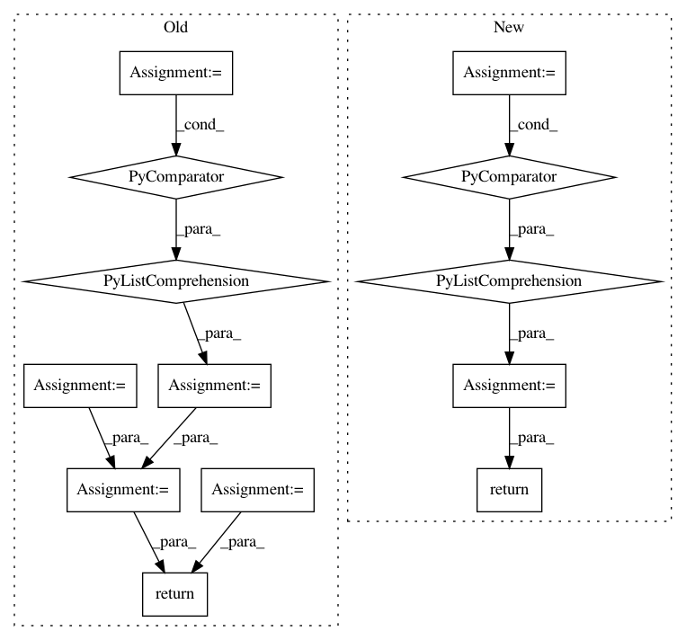

2bcb7d572ac8fdacceb56d5cbd5b05fad8c71e5e,tools/sort/sort.py,Sort,sort_blur,#Sort#,155
Before Change
filename_list, image_list = self._get_images()
logger.info("Estimating blur...")
blurs = [self.estimate_blur(img) for img in image_list]
logger.info("Sorting...")
matched_list = list(zip(filename_list, blurs))
img_list = sorted(matched_list, key=operator.itemgetter(1), reverse=True)
return img_list
def sort_face(self):
Sort by identity similarity
logger.info("Sorting by identity similarity...")
After Change
logger.info("Sorting by estimated image blur...")
// TODO We have metadata here, so we can mask the face for blur estimate
blurs = [(filename, self.estimate_blur(image))
for filename, image, _ in tqdm(self._loader.load(),
desc="Estimating blur",
total=self._loader.count,
leave=False)]
logger.info("Sorting...")
return sorted(blurs, key=lambda x: x[1], reverse=True)
def sort_face(self):
Sort by identity similarity
logger.info("Sorting by identity similarity...")
In pattern: SUPERPATTERN
Frequency: 3
Non-data size: 13
Instances
Project Name: deepfakes/faceswap
Commit Name: 2bcb7d572ac8fdacceb56d5cbd5b05fad8c71e5e
Time: 2021-03-23
Author: 36920800+torzdf@users.noreply.github.com
File Name: tools/sort/sort.py
Class Name: Sort
Method Name: sort_blur
Project Name: bethgelab/foolbox
Commit Name: 80cfb0e5f889c65a972ebde6c6dae4278b5e28c1
Time: 2020-02-14
Author: git@jonasrauber.de
File Name: foolbox/attacks/base.py
Class Name: MinimizationAttack
Method Name: __call__
Project Name: etal/cnvkit
Commit Name: aef8b785f1ee6882b768f80261019943bea64d7c
Time: 2016-05-19
Author: michael.p.schroeder@gmail.com
File Name: cnvlib/commands.py
Class Name:
Method Name: do_gainloss